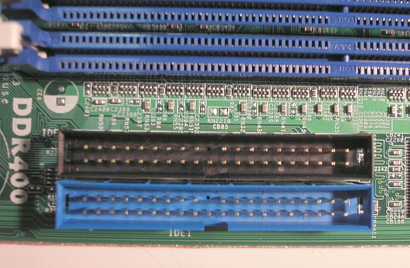

une interface de connexion pour mémoires de masse
(disque dur, lecteur de CD-ROM...).
Elle a été conçue à l'origine par Western Digital
sous le nom Integrated Drive Electronics ou IDE.

Les périphériques (disques, lecteurs de CD, etc.)
sont reliés à la carte mère par une nappe souple
comportant des connecteurs 40 points, parfois munis
d'un détrompeur.
En savoir plus